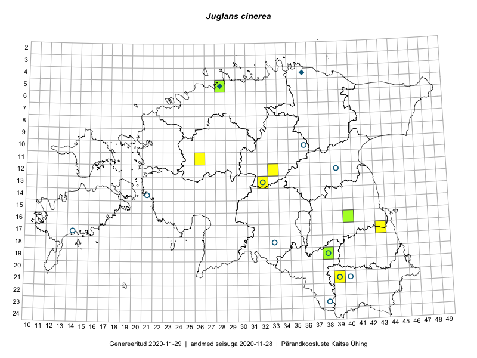

Juglans cinerea
Uuendatud: 2016-12-01
Kaardile koondatud taksonid: Juglans cinerea L.

Kaart põhineb 6 kirjel.
Viited andmebaasikirjetele
- Rein Kalamees, Eerik Leibak: 2016-06-13: 17-43: GPS punkt
- Rein Kalamees, Eerik Leibak: 2016-06-17: 21-39: GPS punkt
- Rein Kalamees, Eerik Leibak: 2016-06-17: 21-39: ala
- Tõnu Ploompuu, Marko Veinbergs, Eerik Leibak: 2016-07-22: 12-33: ala
- Tõnu Ploompuu, Marko Veinbergs, Eerik Leibak: 2016-07-22: 12-33: GPS punkt
- Susanna Vain, Thea Kull, Raivo Kalle: 2016-07-21: 13-32: GPS punkt